Employee wellbeing for the business with no HR team
Brio gives the person handed "people stuff" a guided way to run real wellbeing programs, and gives the business owner honest proof it is working at the team level only. The product is the privacy boundary between what the owner sees and what employees share. In an SMB with no HR layer, that boundary has to be built into the architecture.
There is a real gap. No competitor combines self-serve SMB pricing, a guided program engine for non-HR operators, and a genuine aggregate-only team signal.
Privacy is not a feature - it is the product. Products treating privacy as policy erode participation. Products treating it as architecture earn it.
The operator is the hero, but the employee is the engine. Without employee participation, there is no signal. The value chain starts with employee trust.
Self-serve and transparent pricing are table-stakes. The solo operator will not enter a sales process before seeing a price. Gusto and Headspace Core prove this converts.
The right UX pattern is a hybrid: Guided Program Flow plus Pulse Loop. No competitor holds this combination in a self-serve, no-HR package.
Lean UX Canvas
One-page product hypothesis before the details. Read this first, then dive into the sections below for the evidence behind each cell.
Brio - Lean UX Canvas
Framework: Jeff Gothelf, Lean UX Canvas v2. Populated from Strategy v_refresh and AARRR v_refresh (June 2026).
Small businesses (10 to 200 employees) with no HR team have no credible, self-serve tool to run employee wellbeing. The person handed "people stuff" has no training, no framework, and no way to know if efforts are working. The business owner needs proof the investment is worthwhile but has no HR layer to filter individual data.
No competitor combines self-serve SMB pricing, a guided program engine for non-HR operators, and a genuine aggregate-only team signal in one product.
- 70% of operators complete setup and launch a first program within 7 days (hypothesis)
- 65% average team check-in participation rate (hypothesis)
- 8 to 12% free-to-paid conversion within 60 days (hypothesis)
- Monthly churn below 4% past 90 days (hypothesis)
All targets are hypotheses pending real user data.
Buyer and operator: Office manager, ops lead, EA, or founder at a 10 to 200 person company. No HR title. Motivated by competence and clarity. Cannot get started with competitors without a demo call.
Owner: Founder or CEO. Time-poor. Approves budget. Checks in monthly for one number and a trend.
End user: Employee. Did not choose Brio. Must trust the privacy model before responding honestly. Individual data never surfaces up the chain.
Operator: Feels competent running wellbeing without HR training. Has a clear next action after every check-in cycle. Is not guessing.
Owner: Sees a credible, honest team-level signal without individual surveillance. Can make confident budget decisions in under 2 minutes per month.
Employee: Participates knowing their individual answer is architecturally private. Feels supported, not monitored.
- Guided program engine: operator picks from a curated library, product runs the cadence
- Pulse loop: weekly check-in aggregates into a rolling team score with plain-language interpretation
- Privacy architecture: minimum-N threshold (assumption: 5), non-configurable, with persistent pre-check-in disclosure
- Owner dashboard: aggregate-only, read-only, gated behind paid tier
- No demo required. Transparent pricing. Free tier up to 10 employees.
H1: Showing the privacy mechanism on the product page before signup drives employee participation above 65%.
H2: Transparent pricing with no demo required converts the operator without a sales call in over 50% of trial-to-paid paths.
H3: Aha moment = first aggregate score plus plain-language interpretation plus a next action. Score alone does not create a habit.
H4: Gating the owner dashboard behind the paid tier drives 8 to 12% free-to-paid conversion within 60 days.
An SMB operator who has never run a formal wellbeing program believes that a self-serve, aggregate-only tool (no HR required, no individual data visible) delivers real team-level wellbeing value worth paying for - AND employees trust the privacy model enough to respond honestly.
If either half is false, the product fails. No operator belief means no acquisition. No employee participation means no signal, no owner value, no renewal. Every other hypothesis depends on this one.
Source: research/strategy.md, Riskiest Assumption, Option D.
Run a no-product prototype test: send a 1-question wellbeing check-in to a 10 to 15 person team via plain email (no Brio branding). Tell employees explicitly that only the aggregate score will be shared with their manager. Measure actual participation rate vs. stated intent.
Pass: Participation rate above 40% and at least one employee asks a follow-up question about how results will be used - signaling belief in the privacy model.
Fail: Participation below 40% even with a direct invitation and explicit privacy statement. If this fails, the product premise needs rethinking before building anything.
This test costs nothing, requires no code, and can run before any design work begins.
Strategy (v_refresh - validated)
Objectives
| Objective | Metric | Target | Verdict |
|---|---|---|---|
| Operator feels competent without HR training | % completing setup + first program in 7 days | 70% hypothesis | Confirmed |
| Owner sees credible team-level signal | % viewing dashboard without 30s bounce | 60% hypothesis | Confirmed |
| Employee trust drives participation | Team check-in participation rate | 65% avg hypothesis | Confirmed + mechanism |
| Measurable business retention | Monthly churn past 90 days | <4% hypothesis | Unchanged |
Audience Segments
| Segment | Profile | JTBD | Priority |
|---|---|---|---|
| Operator | Office manager, ops, EA, or founder. 26-45. No HR training. Over-extended. | "When I'm responsible for wellbeing with no training, I want a guided system so I feel competent and the team benefits." | Primary |
| Owner | Founder or CEO. Business-minded, time-poor. Approves budget. Checks in monthly. | "When I need to know if my investment is working, I want a clear honest team-level signal without individual data." | Secondary |
| Employee | Does not choose Brio. Skeptical. Must trust the privacy model before responding honestly. | "When I'm asked how I'm doing at work, I want to know my answer is private and actually influences something." | Privacy constraint |
Business Model
| Tier | Audience | Price | Key limit / driver |
|---|---|---|---|
| Free | Up to 10 employees | $0 | 1 program, operator view only. No owner dashboard. |
| Starter | Up to 50 employees | ~$5/seat/month hypothesis | Full program library, owner dashboard (aggregate), trend analytics. |
| Growth | 50-200+ employees | ~$9/seat/month hypothesis | Multi-team aggregation, integrations, priority support. |
Pricing benchmarked against Headspace Core ($3.75-5.83/user/month) and Officevibe's former $5/user/month. Sources: organizations.headspace.com/small-business, workleap.com/pricing. All figures are hypotheses.
Riskiest Assumption
An SMB operator who has never run a formal wellbeing program believes that a self-serve, aggregate-only tool (no HR required, no individual data visible) delivers real team-level wellbeing value worth paying for - AND employees trust the aggregate-only privacy promise enough to respond honestly to regular check-ins.
If either half is false, the product fails. No operator belief means no acquisition and no activation. No employee participation means no aggregate signal, no owner value, and no renewal. Every other hypothesis (H1 through H6) depends on this one being true.
What proves it: Operators completing a 30-day free trial with at least 5 employee responses and not churning. Employee participation above 50% in the first 4-week cycle. Operator qualitative feedback citing "useful" within 60 days.
What breaks it: Free tier accounts where the operator activated but zero employees responded after 14 days. Operators canceling citing "not enough data" without ever seeing an aggregate result. Employees expressing persistent belief that their responses were visible to management.
Smallest test: No-product prototype - plain email check-in to a real team, explicit privacy statement, measure participation rate. Pass: above 40%. Fail: below 40% even with direct invitation. No code needed. Run before building anything.
Source: research/strategy.md, Riskiest Assumption; research/docs/benchmark.md (Limeade and Typeform anti-patterns); research/docs/competitors.md (no competitor has solved both halves)
AARRR Funnel (v_refresh)
| Stage | Primary Channel / Mechanic | Key Hypothesis | MVP Decision | Metric | Target |
|---|---|---|---|---|---|
| Acquisition | SEO targeting operator how-to queries (not product comparison pages). LinkedIn job title targeting. Free tier as permanent top-of-funnel. | Free tier is the primary acquisition driver. Demo-required friction filters out the solo operator who is the primary buyer. | No credit card at signup. Single email field. Operator how-to content, not comparison-site SEO. | New signups/month | 200 by month 6 hypothesis |
| Activation | Guided linear onboarding. First program pre-selected by company size. Privacy disclosure built into employee invite flow before Question 1. | Aha moment = first aggregate score plus plain-language interpretation plus a suggested next action. Score alone does not create a habit. | Opinionated linear onboarding. No blank-slate setup. Privacy disclosure is not optional, not a modal - one sentence, before Question 1, every time. | % completing setup + first invite in 48h | 55% hypothesis |
| Retention | Weekly operator email digest. Consistent employee check-in cadence. Persistent pre-check-in privacy disclosure as trust-training mechanism. Owner monthly digest. | Operator retention is driven by the weekly digest email. Employee participation above 60% is the leading indicator for operator retention. Repeated privacy disclosure trains employee trust over time. | Build weekly operator digest email before in-app notifications. Build persistent pre-check-in privacy disclosure into every check-in, not just onboarding. | 90-day operator retention | 65% hypothesis |
| Revenue | Upgrade triggered by team-size limit (more than 10 employees) or owner dashboard access request. Both triggers active. | Owner dashboard is the primary upgrade driver. Operator upgrades to give the owner visibility - not because they hit a feature wall. | Gate owner dashboard behind paid tier. Keep operator dashboard and one program on free tier to demonstrate real value first. | Free-to-paid conversion | 8-12% in 60 days hypothesis |
| Referral | Operator-to-peer organic. In-product prompt at 30-day positive milestone (participation above 50%). No formal referral program in V1. | Operator-to-peer referral is the strongest channel in year 1. Owners share to look like caring leaders, not for cash incentives. | Single share prompt at 30-day milestone. Track referral source at signup with a dropdown. Referral infrastructure in V2. | % signups from referral (self-reported) | 20% by month 9 hypothesis |
4 Key Takeaways
The operator must believe the product is worth launching (their half of the riskiest assumption), AND employees must trust the privacy model enough to respond (the other half). Both must succeed in session one. Every V1 decision optimizes for this double-trust moment.
The operator upgrades to give the owner visibility. Design the upgrade moment around that emotional job - not feature lists or arbitrary limits.
If employees stop responding, aggregate signals degrade, operators lose faith, and churn follows. Repeated privacy disclosure (before every check-in, not just onboarding) is the retention mechanism.
Do not cripple it so badly it cannot demonstrate value. The 10-employee limit is the natural, non-punitive conversion trigger. A free tier that shows nothing meaningful does not convert - it just delays churn.
Competitive Analysis
8 companies researched across 3 groups. Public pages only - June 2026. Screenshots below.
Competitor Groups
| Name | Why in this group | What to study |
|---|---|---|
| Wellable | Programs + challenges + rewards for SMB-to-enterprise. 25-user minimum. | Privacy architecture, 10-response threshold, operator vs. owner dashboard split |
| Nivati | Expanded to <100-employee SMBs (Sept 2024). Therapy + content dual track. | SMB pivot execution, HIPAA privacy handling, demo-required friction |
| Vantage Fit | Gamified activity challenges. Transparent pricing. Closest to challenge mechanic overlap. | Leaderboard vs. privacy tension, 250-employee minimum problem |
| Woliba | Explicitly targets 20+ employee SMBs. MAU pricing. AI burnout detection. | Admin burnout-signal visibility (privacy gap), MAU pricing mechanics |
| Name | Why in this group | What to study |
|---|---|---|
| Calm for Business | Strongest brand recognition. Pivoting toward clinical/enterprise. | Product-market clarity problem, per-user pricing model |
| Headspace Core | Most SMB-accessible. 10-seat minimum, transparent pricing, explicit privacy statement. | Privacy statement language (model for Brio), self-serve calculator |
| Name | Why in this group | What to study |
|---|---|---|
| Gusto | Gold standard for SMB SaaS. 500K+ customers. "Even if you're not an expert" positioning. | Transparent pricing, outcome-framed non-expert language, modular architecture |
| Officevibe / Workleap | Best-documented anonymity threshold in the category (3-respondent rule). Just repriced out of SMB. | Anonymity threshold documentation, AI-action mechanic, score visualization |
Comparison Matrix
| Competitor | Audience | Product Foundation | Key Mechanism | Trust / Privacy | Monetization |
|---|---|---|---|---|---|
| Woliba | 20-200+ employees (explicit SMB) | 8 integrated modules | MAU pricing, AI burnout detection by manager | Claims anonymous surveys but burnout signals by manager create individual inference risk | $2/MAU, $100/mo min, demo required |
| Wellable | 25-10,000 employees, HR assumed | Programs + rewards + recognition | 40+ challenge types, points to gift cards | Health assessment aggregate only (10-response threshold). Activity participation admin-visible. | $1.25 PUPM, demo required |
| Headspace Core | 10-1,000, self-serve | Mindfulness content library | Content access, admin sees aggregate enrollment only | "No PII in utilization data" - clearest public statement | $3.75-5.83/user/month, transparent |
| Officevibe / Workleap | Was SMB, now $4,999/yr flat | Continuous pulse + AI analysis | 3-respondent threshold, AI-recommended actions | Most detailed public anonymity model. Individual participation invisible to admins. | Old $5/user/month. Now $4,999/yr. SMB abandoned. |
| Gusto | 500K+ US SMBs, owner as buyer | Payroll + HR + benefits | "Even if you're not an expert" guided setup | Privacy is payroll compliance, no wellbeing-specific wall | $49+$6/person/month, fully transparent |
Screenshots
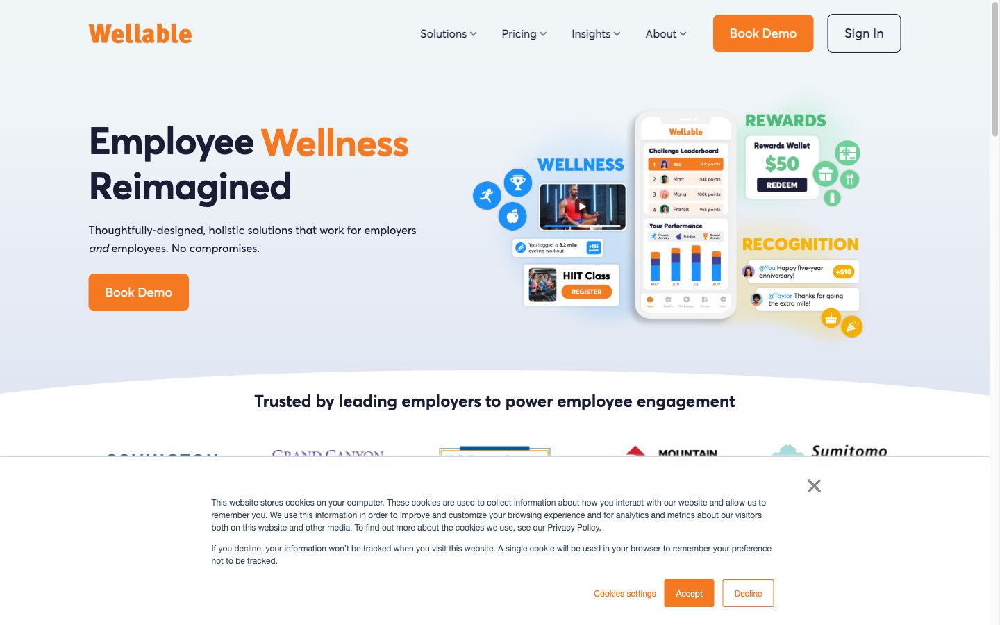
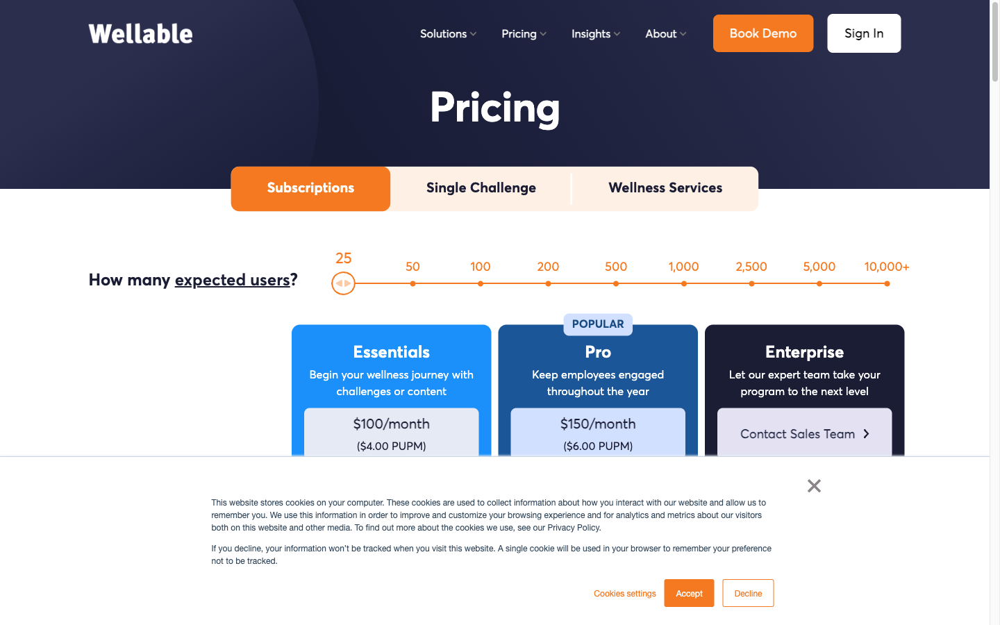
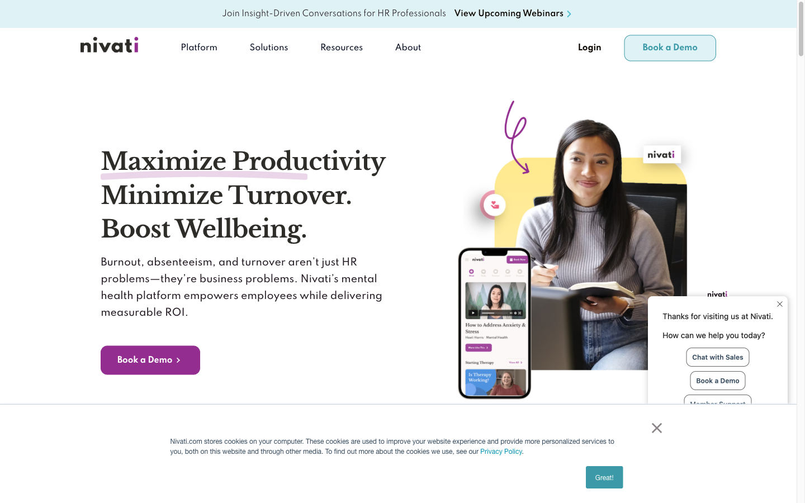
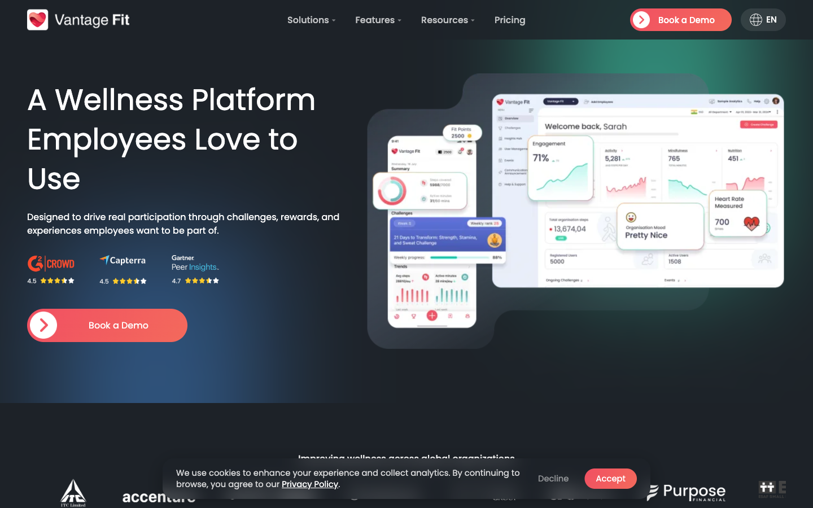
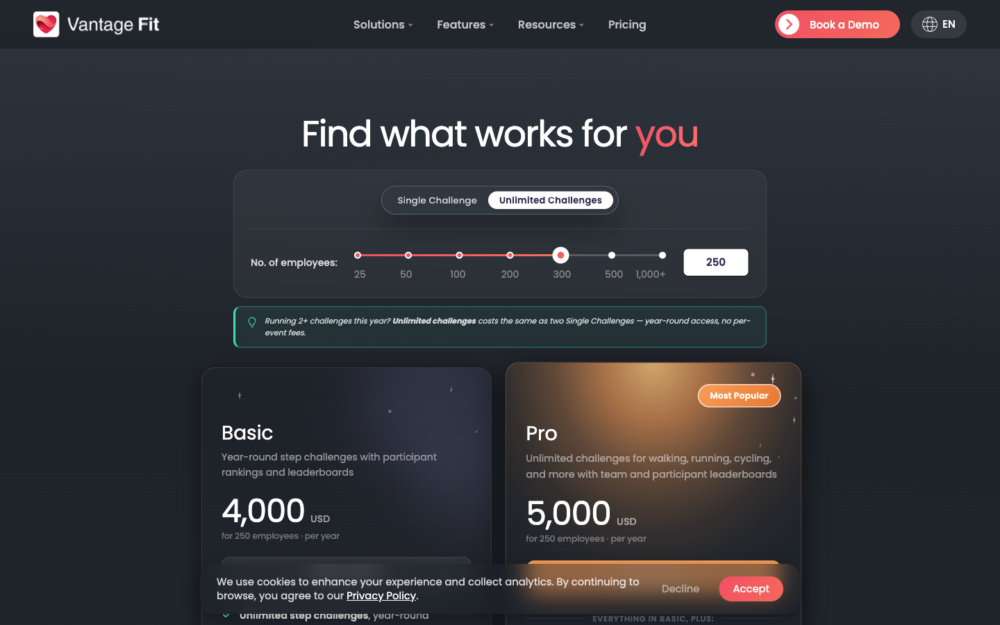
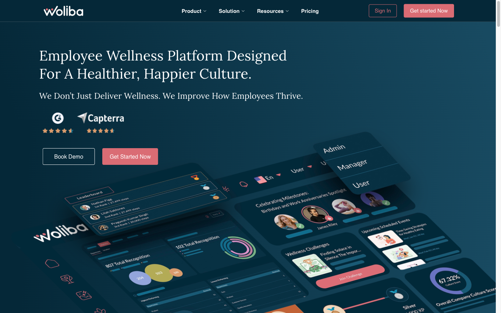
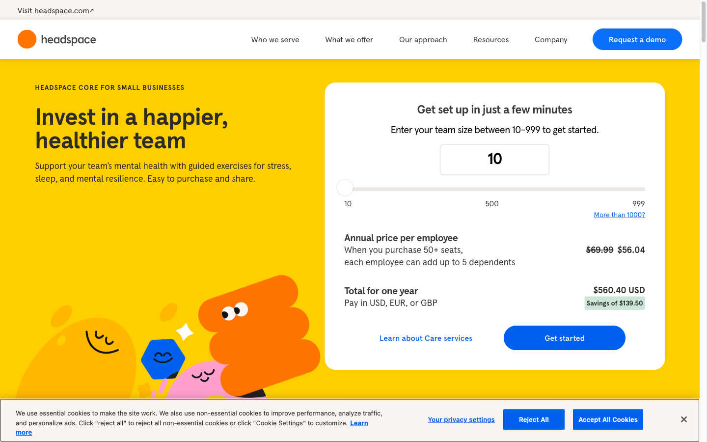
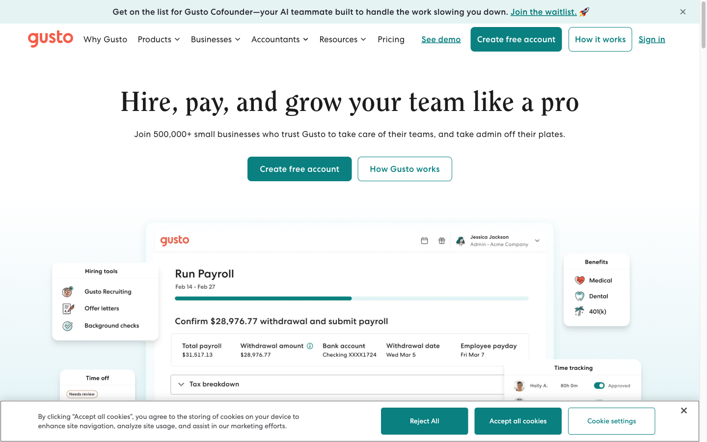
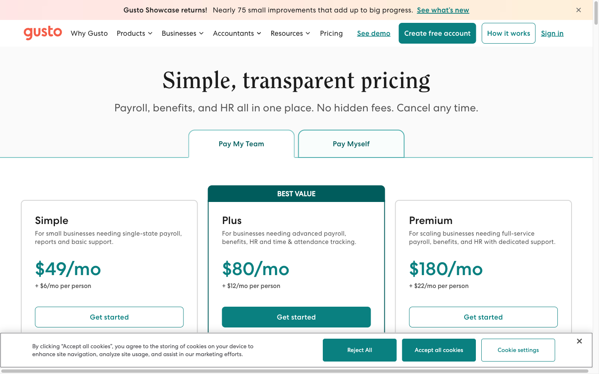
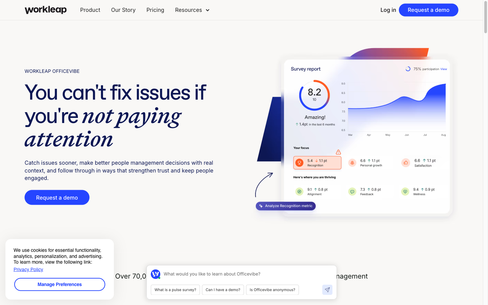
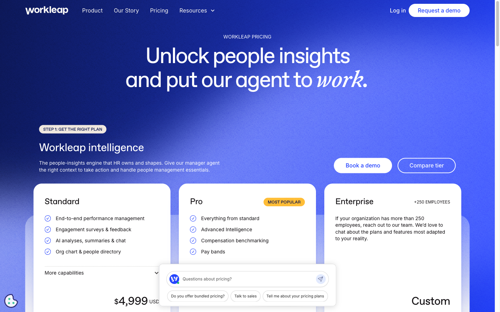
Key Findings
3 Common Patterns
Privacy is claimed, not designed. No competitor specifies the mechanism on a public product page.
All assume an HR sponsor exists. No one designs for the no-HR premise.
Individual benefit and team signal are separate products, never one coherent design.
3 Key Differences
Pricing transparency splits the market: SMB-first products publish prices, enterprise-first hide them.
The aggregate signal is always a reporting add-on, never the core value.
Self-serve sales motion converts the solo operator. Demo-required filters them out.
Our Gap
No product: prices transparently for 10-50 employees, is self-serve, makes the aggregate team signal the primary value, designs for no-HR, states privacy architecture on the product page, makes the operator the hero.
Benchmark - Trust and Privacy
5 best-in-class products from outside the direct competitor set, scored on how well they handle aggregate insight without surveilling the individual.
Scores
| Criterion | Culture Amp | Oura Ring | Apple Health | Typeform | Limeade |
|---|---|---|---|---|---|
| C1 - Employer visibility clarity | 4 | 4 | 5 | 2 | 1 |
| C2 - Anonymity threshold communicated | 5 | 3 | N/A | 1 | 2 |
| C3 - Small-team edge case honesty | 5 | 3 | N/A | 1 | 1 |
| C4 - Data use transparency + consent | 4 | 5 | 5 | 2 | 1 |
| C5 - Individual experience stays private | 4 | 5 | 5 | 2 | 2 |
| C6 - Tone of team reporting | 4 | 4 | 5 | 3 | 2 |
| C7 - Opt-in vs. opt-out framing | 3 | 5 | 5 | 2 | 1 |
| C8 - Privacy visible in product UI | 4 | 3 | 5 | 1 | 1 |
| Total | 33/40 | 32/35 | 35/30* | 14/40 | 11/40 |
*Apple Health has no employer/group aggregation layer; C2 and C3 are N/A. Total reflects available criteria only.
Benchmark Screenshots
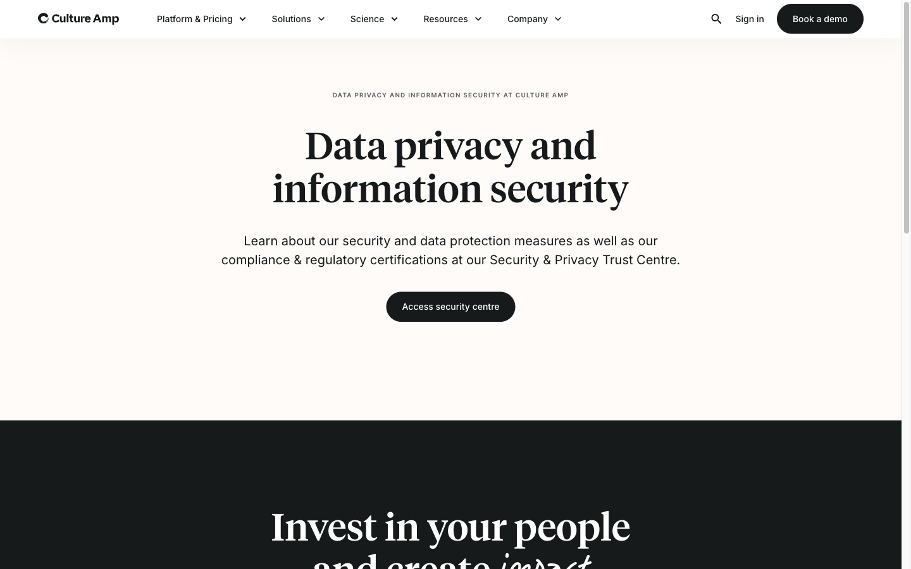
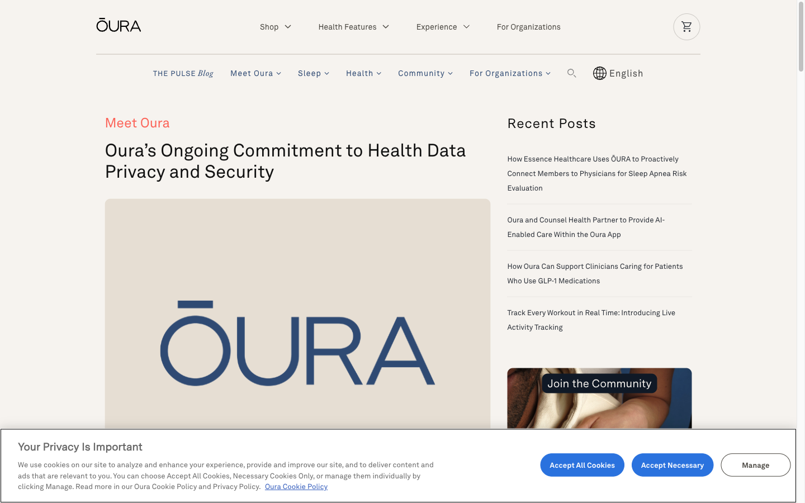
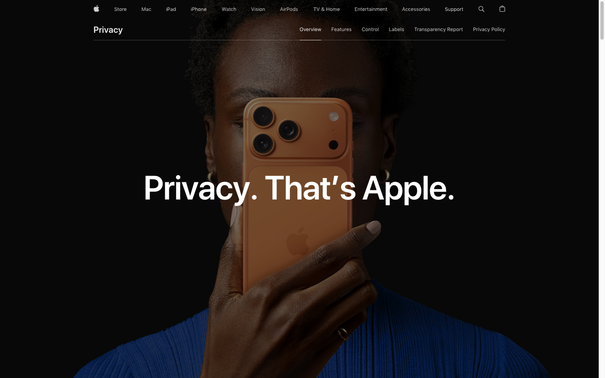
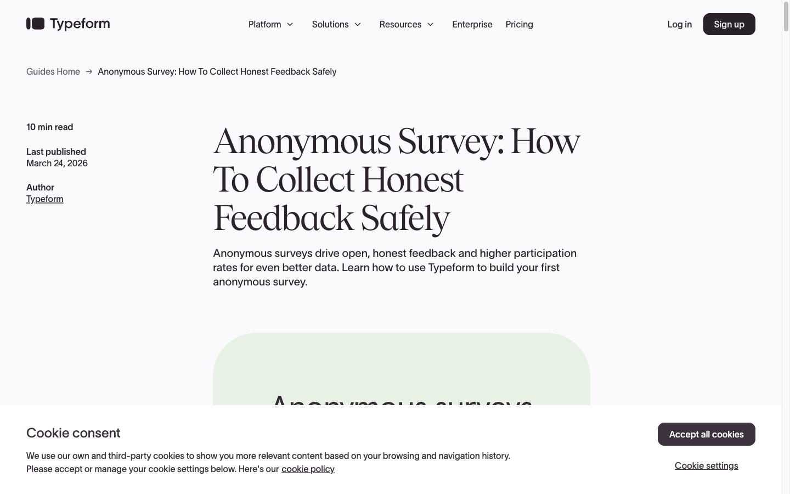
Top 3 Mechanisms for Brio's MVP
Indirect Identification Protection
From Culture Amp: when a group is below the minimum-N threshold, hide that group's data AND the next-smallest group's data. Prevents inference attacks in small teams. In Brio: fixed minimum-N (assumption: 5, to be validated with legal counsel), non-configurable by employer.
Why it works: Employees who trust that their answer cannot be inferred by deduction participate more honestly. Addresses the "I'm the only person in my demographic" problem - the most common reason minority-group members distrust anonymous surveys.
Privacy Visible in the Product UI
From Apple Health: privacy is a visible, interactive product element - not a policy document. In Brio: (a) persistent label on owner dashboard stating what they cannot see; (b) one-sentence pre-check-in disclosure before every employee check-in; (c) operator setup screen showing the exact owner view to demonstrate the privacy boundary.
Why it works: Repeated, contextual privacy communication trains trust over time. One-time consent flows are forgotten. Persistent UI indicators are not. The repetition is the trust.
Business Model as Privacy Architecture
From Oura Ring: subscription-only revenue removes the financial incentive to monetize individual data. State explicitly: "Brio earns revenue from subscriptions only. We have no financial reason to sell or analyze individual employee data - and architecturally, we cannot."
Why it works: Trust arguments based on aligned incentives are more durable than those based on goodwill. "We won't do X because we promise not to" is weaker than "we won't do X because doing X would hurt our business model."
1 Mechanism That Will Not Work
Opt-out Privacy Consent (Typeform / Limeade pattern)
Privacy protection that requires the employee to actively refuse participation, or requires the admin to manually configure anonymity settings. In an employer-funded product, employees are not in a free consent context. Opt-out mechanisms in this power dynamic are not meaningful consent.
Beyond ethics: employees who suspect monitoring respond dishonestly, corrupting the aggregate signal. The whole product fails. Brio's privacy must be always-on, non-configurable, and opt-in for sharing.
UX Patterns
Critical Behavioral Entry Point
Privacy Doubt Kills Participation Before the First Session
Before employees answer their first check-in, they will ask: "Can my manager see my answer?" If uncertain, they will not respond honestly - or at all. This doubt must be resolved before Question 1 appears, not after. The privacy model is the permission slip that makes everything else possible. Without employee participation, the entire value chain collapses.
Design implication: One sentence, plain language, specific, before Question 1. Repeated at the same moment in every subsequent check-in. The repetition is the trust.
5 UX Patterns Evaluated
Guided Program Flow
Product pre-selects a recommended program. Operator confirms or swaps. Program runs on defined cadence. System sends nudges, collects check-ins, surfaces aggregate results. Operator's job: launch and review, not build.
Used by: Wellable (wellable.co), Headspace Core (organizations.headspace.com/small-business)
Pulse + Insight Loop
Short recurring check-ins aggregate into a rolling score and trend. Product generates a plain-language interpretation and suggested next action. Operator reacts to signals rather than initiating from scratch.
Used by: Officevibe / Workleap (workleap.com/officevibe)
Benefit Marketplace
Employees choose their own wellness resources from a curated library. Employer funds access. Admin sees utilization rates by content type, not individual. Low operator overhead.
Used by: Calm (health.calm.com), Headspace Core, Nivati (nivati.com)
Contextual Nudge System
Lightweight, well-timed prompts to employees. No programs, no challenges. Consistent micro-moments of engagement. Operator sets cadence and tone; product executes.
Partially: Officevibe pulse, Woliba nudge system
Gamified Challenge with Leaderboards
Leaderboards require individual ranking. Individual ranking means individual visibility. Architecturally incompatible with the aggregate-only privacy model. Also creates participation inequality: already-healthy employees dominate.
Used by: Vantage Fit (vantagefit.io), Woliba (woliba.io), Wellable (wellable.co)
Pattern Selection - Why the Hybrid
| Reason | Explanation | Source |
|---|---|---|
| Serves both operator JTBDs | Pattern 1 gives structure (what do I run?). Pattern 2 gives awareness (is something off?). One pattern would address only one job. Together they are complete. | JTBD J1 and J3 - validated product model v2 |
| Fills an unclaimed competitor gap | Wellable has programs but no aggregate pulse. Officevibe has pulse but no programs. The combination is unclaimed in the self-serve, no-HR space. | Phase 3 competitive gap analysis |
| One data flow, two output layers | Employee check-ins feed both the program feedback loop (operator) and the owner pulse from the same participation event. One mechanic, two stakeholder values. | Validated audience model, Segments A and B |
Conclusions
Gaps
| Gap | Evidence | Source | Severity |
|---|---|---|---|
| No self-serve, no-demo wellbeing tool for 10-50 employees | Nivati, Woliba, Wellable all require demos | Phase 3: nivati.com/sign-up, woliba.io/pricing | Critical |
| No product states privacy architecture on the product page | Only Headspace Core and Officevibe state specifics. Others use trust-me language. | Phase 3, Phase 4 | Critical |
| No product explicitly designs for the absence of an HR team | All competitors assume an HR sponsor in language and onboarding | Phase 3 competitor group analysis | Critical |
| Officevibe repriced out of the SMB segment | Workleap moved from $5/user/month to $4,999/year flat | Phase 3: workleap.com/pricing | High - opportunity |
| Aggregate signal is always a reporting add-on, never the core value | Pulse/survey features are secondary to program or content delivery in all competitors | Phase 3 comparison matrix | High |
| No competitor addresses the small-group inference problem publicly | Culture Amp's 3-tier protection is the only documented solution | Phase 4: support.cultureamp.com/en/articles/7048386 | Medium |
6 Hypotheses
Brio shows the exact privacy mechanism (minimum-N threshold, what the owner cannot see) on the product page before signup
Employee participation rates will exceed 65% at steady state
Employees with certainty about privacy limits before their first interaction respond more honestly. Confirmed by Culture Amp's pre-survey disclosure architecture. Source: support.cultureamp.com/en/articles/7048386
Brio offers transparent pricing starting at ~$5/seat/month with no demo required
The operator will convert without a sales call in over 50% of trial-to-paid paths
Headspace Core's self-serve small business page and Gusto's no-contact conversion model prove this audience converts without human sales touch when pricing is clear. Sources: organizations.headspace.com/small-business, gusto.com/pricing
The operator's aha moment is seeing the first aggregated score alongside a plain-language interpretation and a suggested next action
90-day retention will exceed 65%
Officevibe's AI-recommended-action model shows that operators who understand what to do next stay engaged. Seeing a score without context produces no action and no habit. Source: workleap.com/officevibe
The owner dashboard (aggregate view) is gated behind the paid tier
Free-to-paid conversion will reach 8-12% within 60 days of activation
The owner wanting proof the investment is working is the renewal driver (confirmed in JTBD analysis). The operator upgrades to give the owner access. Source: validated product model v2
Brio makes its subscription-only business model an explicit part of the privacy story
Employee trust and participation will be measurably higher than a control that sees only a privacy policy link
Oura's "subscription model = no data monetization incentive" argument explains the aligned incentive, not just the promise. Structural arguments outlast policy promises. Source: ouraring.com/blog/health-data-privacy
A non-configurable minimum-N threshold (assumption: 5 respondents) is applied to all aggregate views
Operators and owners accept the data limitation without significant churn
Culture Amp's fixed-threshold model is accepted by enterprise buyers. The number is not the issue - the clarity and consistency are. Edge case: a 5-person company that can never see any data must be addressed in free tier design. Source: support.cultureamp.com/en/articles/7048386
Open Questions
What is the legally defensible minimum-N threshold in the US market? Is 5 correct?
Does the operator discover Brio, or does the owner?
What is the right check-in cadence - weekly, biweekly, or monthly?
Does a 10-employee free tier create meaningful conversion, or enable permanent free usage?
How does Brio handle a company that grows past the anonymity threshold mid-cycle?
What regulatory review is needed in the US for emotional/mood check-in data?
Live Research
Claims tested against live sources after persona and JTBD work was complete. All sources fetched June 2026. No memory used.
Sources: Gallup Workplace, SHRM (x2), Wellhub SMB Report, RAND wellness program study (cited via multiple aggregators), Perceptyx survey guide, Social desirability bias research (multiple aggregators), Business Group on Health, SSR/Electroiq wellness statistics aggregators, Darwinbox.
Confirmed Findings
SHRM documented that when employees distrust anonymity, "they tend to answer dishonestly - lying about their title, salary level or years of service" or paint experiences "much rosier than they really are." The cause in small teams: demographic data in surveys (department, title, tenure) enables identification even when names are removed. Expert quote: "the more identifiable variables a company collects, the more likely they will not receive frank answers." Separate social desirability bias research confirms employees systematically over-report positive experiences when they suspect observation.
Source: shrm.org/topics-tools/news/employee-relations/employee-engagement-surveys-workers-distrust; shrm.org/topics-tools/news/employee-relations/how-anonymous-employee-satisfaction-survey
The riskiest assumption is directionally confirmed as a real risk, not an invented one. Employees DO self-censor. The question for Brio is whether the privacy architecture (minimum-N, visible disclosure, no demographic collection) adequately addresses the specific triggers of self-censorship documented here.
Wellhub's 2026 State of Work-Life Wellness survey (3,773 SMB employees): 66% of SMB employees with a formal wellness program say they feel good or thriving overall vs. 40% without. 63% rate their mental health as good or thriving with wellbeing support vs. 43% without.
Source: wellhub.com/en-us/resources/work-life-wellness-report-2026-smb/
Confirms there is a real outcome gap between SMBs with and without wellness programs. The market opportunity (serving the 58% of small businesses that now have programs, and the remainder that do not) is real. Note: this data is from a Wellhub-commissioned study; methodology not independently verifiable.
SHRM identified two specific interventions that increase survey trust: (1) third-party administration with aggregation rules requiring 5-6+ responses before revealing any data, and (2) multiple touchpoints throughout the year rather than annual surveys. "Frequent check-ins" combined with "manager credibility through visible follow-through" are the two most cited trust-building mechanisms. Separately, 70-75% of employees report being more likely to answer honestly when explicitly assured of total anonymity.
Source: shrm.org/topics-tools/news/employee-relations/employee-engagement-surveys-workers-distrust; vantagecircle.com/en/blog/anonymous-employee-survey/
CONFIRMS the mechanism direction Brio is pursuing: minimum-N threshold before showing any data, explicit disclosure before every check-in, and a repeated disclosure cadence (not just at onboarding). The SHRM recommendation of 5-6 responses minimum supports the assumption of N=5. The weekly pulse cadence also aligns with "multiple touchpoints."
RAND study (cited across SHRM, select software reviewers, and multiple wellness statistics aggregators) found 20-40% employee participation in wellness programs depending on size and scope. Executive involvement can drive this from 44% to 80%. Only 13% of small businesses offer financial incentives vs. 40% of large companies.
Source: RAND study cited in selectsoftwarereviews.com/blog/employee-wellness-statistics and multiple aggregators.
The 65% participation rate target in research/strategy.md O3 is aspirational and should be treated as a steady-state goal, not a launch expectation. RAND's baseline applies to physical wellness challenges (step counts, biometric screenings), which are different from Brio's simpler pulse check-ins (1-3 questions). The gap between the two formats is UNRESOLVED. Initial participation target should be set lower (aim for 40%, celebrate 65%) to avoid the operator feeling the product failed.
Killed Claims
Killed by: SHRM on timing-based inference; multiple sources on small-team identifiability.
SHRM specifically documented that "supervisors could cross-reference survey timing with employee rosters to identify respondents" even without demographic data. In a 12-person team that meets in the same office, a manager who knows that exactly 5 people responded on Tuesday at 2pm can potentially narrow down who those 5 were. The minimum-N threshold prevents the score from showing until 5 respond, but it does not prevent inference from: (a) response timing if the manager can observe when employees are on their phones, (b) knowing that certain employees are "types" who would participate, (c) patterns across multiple check-in cycles that narrow identity over time. This is a distinct risk layer not addressed by the threshold alone.
Source: shrm.org/topics-tools/news/employee-relations/how-anonymous-employee-satisfaction-survey
Note: This does NOT kill the core premise (architecture-based privacy is better than policy-based privacy). It adds a nuance: the threshold is a necessary but not sufficient element. The product needs to also: (a) never show managers the response timing or count of who has responded until after the cycle closes, (b) communicate that response timing and individual check-in status are never shared with managers - not just the score.
Resolution (founder decision, June 2026): Flag F1 is closed by Decisions D1, D4, and D5 combined. Nobody sees a live participation count while a check-in cycle is open - not the operator, not the employee. The operator sees an active-state message ("your check-in is running - results appear after it closes"). The score and response count appear only after the cycle closes and minimum-N is met. This eliminates the timing-inference vector entirely. The privacy architecture in research/docs/benchmark.md Mechanism 1 (Indirect Identification Protection) now covers score-data inference AND count/timing inference. Minimum-N stays at 5 flat for MVP. See research/strategy.md Section 5 for full reasoning.
What We Still Do Not Know
Whether the operator or the owner discovers Brio first.
No direct research found on discovery patterns for SMB wellbeing tools specifically. General B2B data: CEOs have final approval in small businesses, but operators often initiate the search. The "who discovers" question determines whether the landing page leads with competence/ease (operator-first) or ROI/risk-reduction (owner-first). Still open - this is Open Question Q2 from research/docs/research.md.
Whether structural/architectural privacy (subscription = no data monetization incentive) outperforms policy-based privacy in actual employee behavior.
No controlled study found. The Oura Ring and Apple Health precedents support the concept directionally, but no research compared participation rates or honest response rates in matched groups receiving structural vs. policy-based trust arguments. This remains a hypothesis. It is credible and well-reasoned (aligned incentives are more durable than promises) but not empirically verified for employee surveys.
Whether Brio's pulse check-in format experiences the same self-censorship patterns as the traditional engagement surveys studied in the research.
All self-censorship research is from traditional engagement surveys (10-50 questions, demographic data collection). A shorter format with no demographic questions and a weekly cadence might have meaningfully different trust dynamics. The data pattern could be better (less friction, less identifiability from question set) or worse (more frequent asks feel more like surveillance). No direct data found.
The employee participation premise is neither fully confirmed nor killed. It is REAL and requires active design response: employees do self-censor in employer-run surveys, and the risk is amplified in small teams. But the specific mechanisms that address this (explicit disclosure, minimum-N threshold, no demographic collection, visible architecture) are all well-supported by the literature as directions that help. The net picture is: the premise is sound, the design is on the right path, and the specific concern of timing-based inference in very small teams (under 20 people) is a new nuance that the MVP architecture needs to address explicitly. The 65% participation rate target should be treated as a 90-day steady-state goal, not a launch-day expectation - a 40% initial rate is a more realistic benchmark, and the design should tell operators what to expect so they do not feel the product failed.